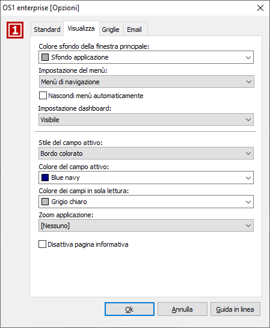
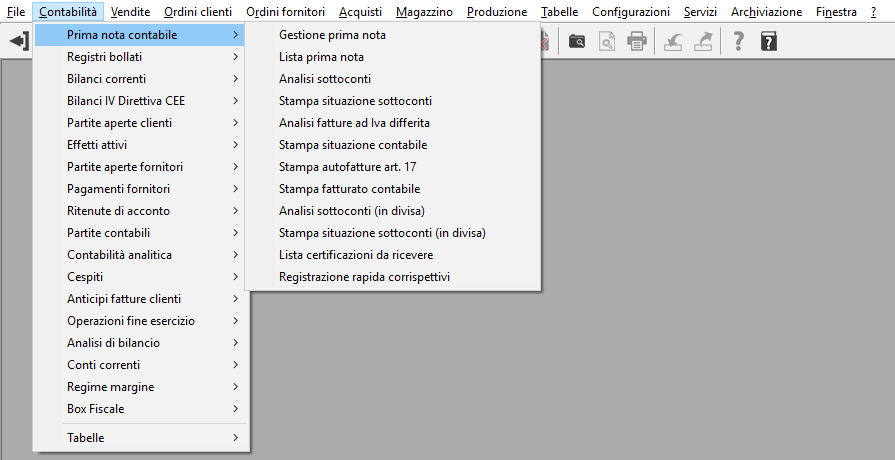
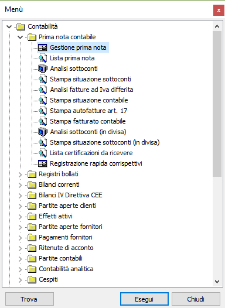
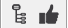
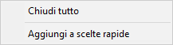
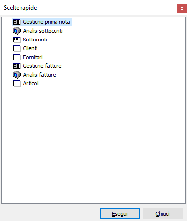
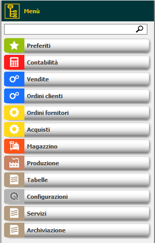
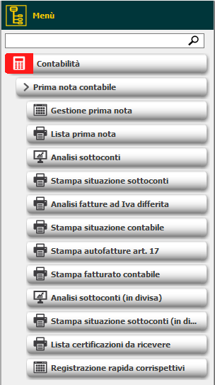
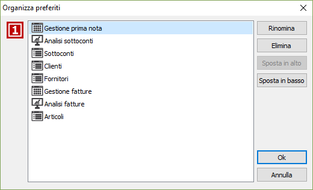

Opzioni visualizza
Da questa pagina è possibile impostare tutte le caratteristiche grafiche relative ai campi, il tipo di menù ed un eventuale zoom dell'applicazione.

COLORE SFONDO DELLA FINESTRA PRINCIPALE: definisce il colore dello sfondo dell'applicazione selezionando uno dei colori presentati.
IMPOSTAZIONE DEL MENÙ: definisce il tipo di menù che l'utente decide di abilitare. La scelta può essere effettuata fra le seguenti modalità:
MENÙ WINDOWS STANDARD: Scegliendo "Menù windows standard" si abilità l'utilizzo del classico menù a tendine di Windows, illustrato sotto. Con questa tipologia di menù, le scelte principali sono contenute sulla Barra di menù; operando su una scelta si apre la relativa tendina per le ulteriori scelte, e così via a cascata.

SEMPRE IL MENÙ DELL'APPLICAZIONE: attiva il menù strutturato tipo Esplora risorse di Windows illustrato sotto. In questo caso, scegliendo una cartella non compare la relativa tendina ma viene visualizzato il livello secondario della struttura, poi l'elenco dei programmi. Per ridurre, in uscita dai programmi, la struttura ai soli livelli superiori occorre ricliccare sulla cartella precedentemente espansa. Questo tipo di menù consente di mantenere attiva l'ultima scelta effettuata.

SEMPRE LE SCELTE RAPIDE: l'opzione consente di ottenere un menù di tipo Esplora risorse come nel caso precedente, ma nel quale vengono visualizzati solo i programmi utilizzati dall'utente, È una soluzione molto comoda per chi, ad esempio, emette solo fatture, o inserisce solo ordini di acquisto, ecc. Occorre tuttavia selezionare i programmi che si vogliono inserire nel menù di scelte rapide. Per fare ciò, occorre in primo luogo confermare questo tipo di selezione nel menù opzioni. Quindi verranno attivati sulla tool bar due bottoni:

il primo richiama il menù dell'applicazione ed il secondo richiama invece il menù delle scelte rapide. Cliccare sul bottone Menù per aprire il menù dell'applicazione e scegliere il nome del programma che si vuole inserire nelle scelte rapide. Evidenziato il nome del programma, cliccare con il pulsante desto del mouse. Si aprirà un menù di scelte
in cui sarà possibile selezionare "Aggiungi a scelte rapide". Il programma selezionato verrà inserito nel menù scelte rapide. Da questo momento sarà sempre disponibile, cliccando sul bottone Scelte rapide, anche questa tipologia di menù.
IN BASE ALL'ULTIMA SCELTA: l'opzione contempla comunque un menù strutturato tipo Esplora Risorse. Al momento dell'avvio dell'applicazione viene riproposto il menù ad albero oppure il menù di scelte rapide in base all'ultimo tipo di menù che si è utilizzato prima della chiusura.
menù di navigazione: attiva un menù di tipo grafico che dà la possibilità, data la sua struttura, di essere utilizzato su monitor touch screen; è suddiviso in aree riconoscibili da un colore ed una grafica differente, cliccando su di una area tutto il menù viene popolato dall'area stessa e dalle proprie sotto scelte; il menu integra i preferiti, tasto destro del mouse sulla scelta per aggiungerla ai preferiti, ed è presente una casella di testo per cercare un qualsiasi testo, premendo la lente saranno mostrate le scelte che contengono il testo trovato.
Cliccando sulla barra "Menù" in alto sarà ripresentato il menù al livello iniziale.
|
 |
 |
NASCONDI Menù AUTOMATICAMENTE: attivo solo con menù di navigazione; se spuntato consente di nascondere il menù quando viene eseguita una scelta che apre una finestra e farlo comparire quando non ci sono più finestre visibili.
Impostazione dashboard: definisce il criterio di visualizzazione della dashboard; qualsiasi criterio venga utilizzato la dashboard potrà essere nascosta e richiamata sempre tramite il relativo pulsante . Le opzioni sono le seguenti:
Automatico: la dashboard viene nascosta quando viene eseguita una scelta che apre una finestra e ricompare quando non ci sono più finestre visibili.
Visibile: la dashboard è sempre visibile.
Non visibile; la dashboard non è mai visibile.
STILE DEL CAMPO ATTIVO: consente di scegliere lo stile di visualizzazione nelle finestre del campo attivo, ovvero del campo su cui ci si trova posizionati. Tale campo potrà essere visualizzato con sfondo colorato, oppure con bordo colorato, oppure senza alcuna personalizzazione, in funzione della scelta qui effettuata.
COLORE DEL CAMPO ATTIVO: consente di definire il colore, nelle finestre video, del campo attivo, ovvero del campo su cui ci si trova posizionati. Selezionare uno dei colori presentati sarà il colore del bordo o dello sfondo in base alla selezione del campo precedente.
COLORE DEI CAMPI IN SOLA LETTURA: consente di definire il colore, nelle finestre video, dei campi in sola lettura, ovvero dei campi in cui vengono visualizzate, senza possibilità di modifica, le descrizioni legate agli elementi delle tabelle. Selezionare uno dei colori presentati.
ZOOM APPLICAZIONE: consente di aumentare la dimensione degli elementi dell'applicazione (pulsanti finestre ecc), ad esempio se si sta utilizzando un monitor ad alta risoluzione; è possibile aumentare le dimensioni del 125, 150, 175 e 200 %. Dopo la modifica l'applicazione si riavvierà automaticamente.
DISATTIVA PAGINA INFORMATIVA: se è configurato a livello di applicazione di mostrare una pagina web informativa nello sfondo dell'applicazione, è possibile disabilitare tale impostazione localmente apponendo la spunta a questa casella.
Nei menù dove sono gestiti i preferiti, menù strutturato e menù di navigazione, è presente la possibilità di organizzare i preferiti stessi tramite una finestra richiamata dal tasto destro del mouse su di una scelta preferita selezionando "Organizza preferiti"; compare la seguente finestra dalla quale è possibile rinominare o eliminare le scelte cambiare l'ordine in cui vengono mostrate utilizzando i pulsanti di spostamento.
